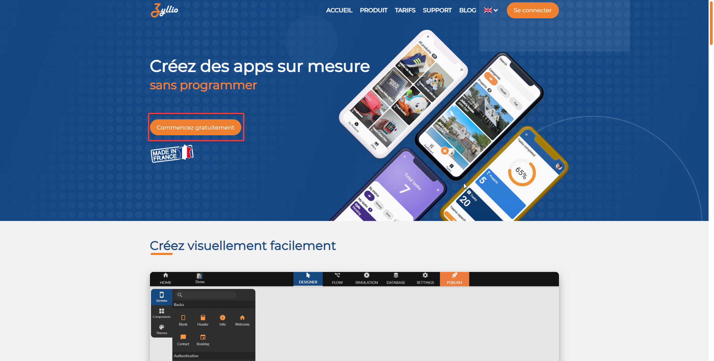

First application
Create an Account
Create an Account
You can create a free account on Zyllio to get started. Each plan offers a range of different features. If you want to start with mobile app design on Zyllio, the free plan is an excellent choice and already offers a multitude of options. You will also be able to choose where your data is hosted. Do you want your applications to be hosted in France? No problem! Creating an account takes just a few seconds.
Visit the homepage of the Zyllio website: https://zyllio.com/

Now click on the orange button "Start for free." The next page allows you to choose where you want your account and applications to be hosted; in this case, we choose France.

You then have the option to sign in with a Twitter or Google account. That's it, you should arrive at your Dashboard! In the next section, we will set the stage to start our first application!